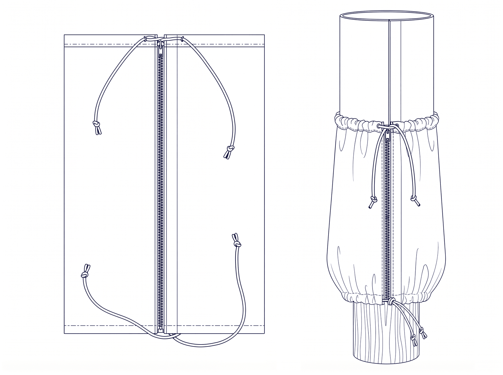
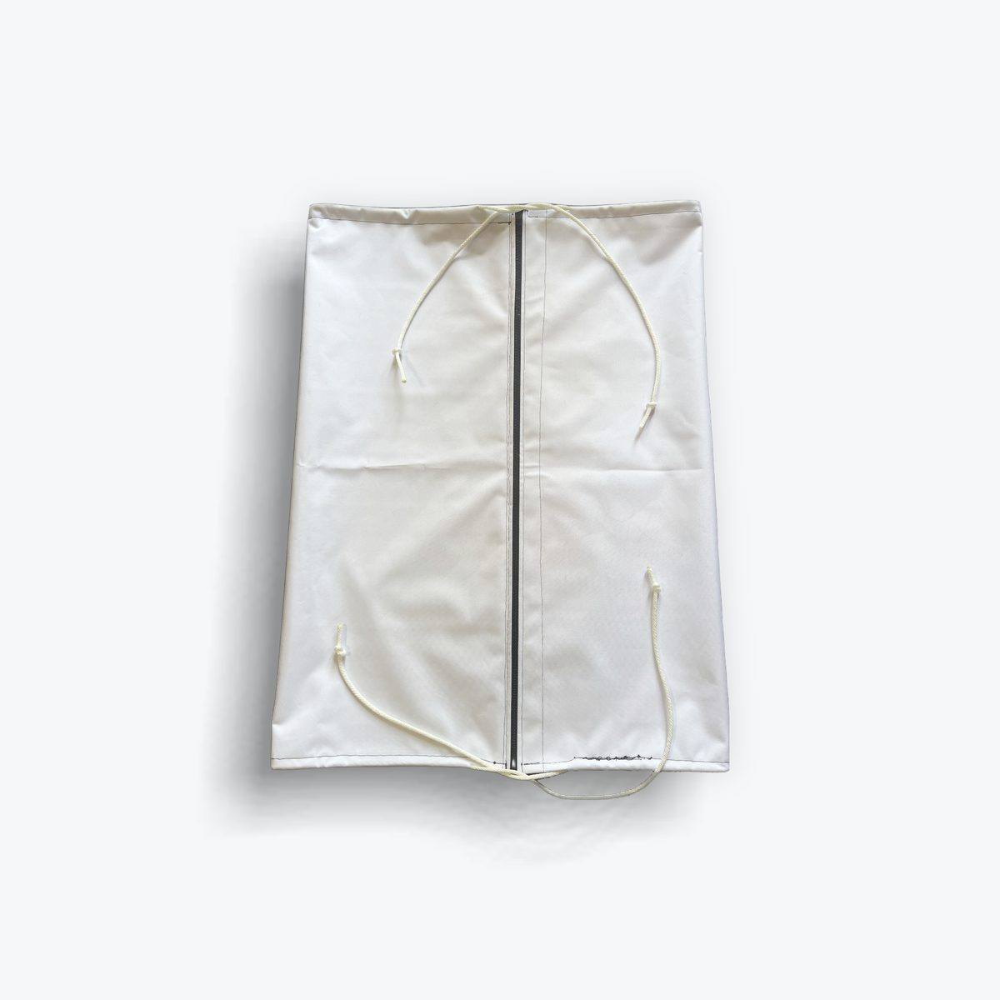
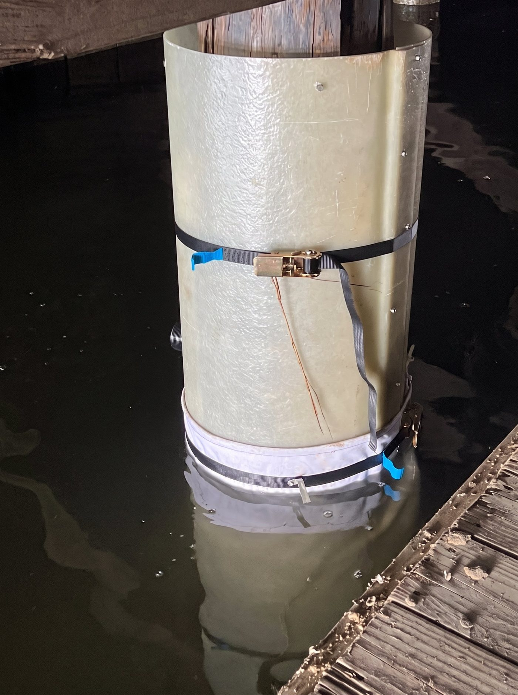

The FK Pile Gasket is a made-to-order waterproof fabric gasket that seals the base of a pile encapsulation form ("pile jacket") during underwater concrete placement — keeping fill material in the form and out of the waterway. It replaces improvised bottom seals (stuffed foam, pleated plastic "diaper" skirts, banding, and bolted clamps) with a one-piece unit a diver zips around the pile and cinches tight. Designed by a working commercial diver who installs pile jackets for a living.

| Property | Value |
|---|---|
| Shell Fabric — Ottertex® Waterproof Canvas | |
| Fiber / construction | 600 denier, 100% polyester |
| Coating | PVC waterproof backing |
| Weight / thickness | 390 g/m² (≈11.5 oz/yd²) · 0.55 mm |
| Resistance | Waterproof; mold/mildew-, UV-, abrasion- and tear-resistant (per fabric manufacturer) |
| Hardware & Construction | |
| Closure | Lenzip® #10 locking zipper with zipper stops, full vertical length |
| Cinching | Dual 1/4" solid braid nylon drawstrings in folded hem channels, top & bottom; tied off with surgeon's knots |
| Stitching | High-tensile bonded polyester thread, UV- and saltwater-resistant |
| Seams | Double-stitched; bar-tack reinforced at zipper ends and drawstring exits |
| Color | White (standard) |
Installation sequence shown is typical; conform to project drawings and specifications. Steps 3–5 are performed by the dive crew.

